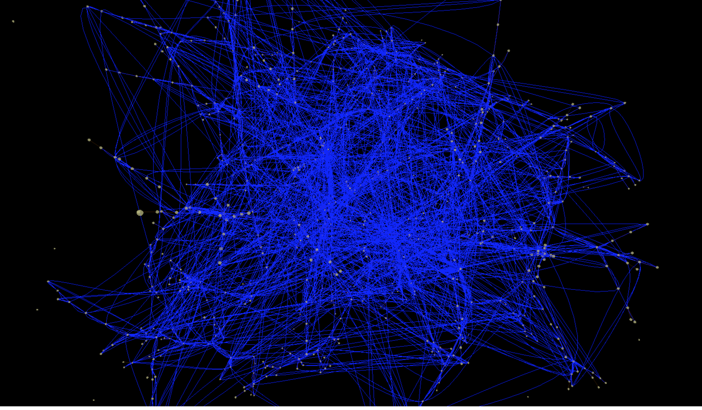
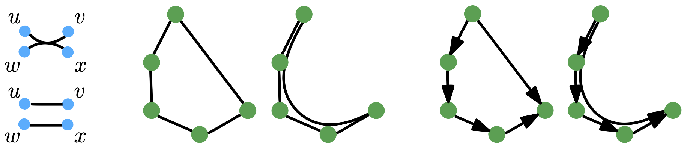
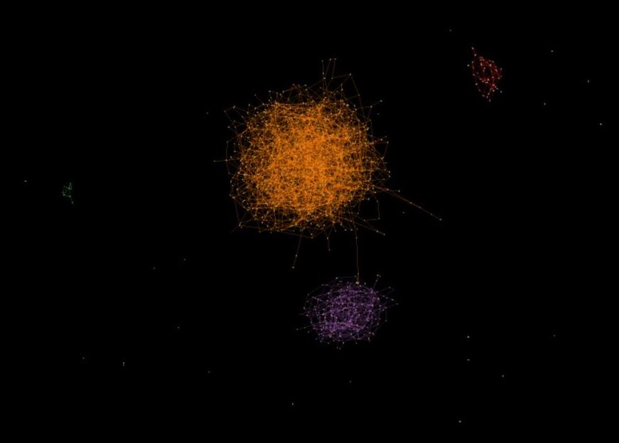

Immersive Edge Path Bundling
Developed for 186.833 Visualisierung 2 at TU Wien 2023 by Manuel Eiweck

Immersive Edge Path Bundling on a graph with 1k nodes and 2k links.
This project is based on the paper "Edge-Path Bundling: A Less Ambiguous
Edge Bundling Approach" by Markus Wallinger, David Archambault, David Auber, Michael Nöllenburg and
Jussi Peltonen.
General
The main purpose of edge bundling in general is to reduce visual clutter in a graph by grouping edges
together. A commonly used approach is to use a force-directed layout algorithm to group edges.
However, this can introduce edge ambiguities. Edge Path Bundling is an approach to avoid this ambiguity.
Only related edges are bundled together on their shortest path between their endpoints.

Example how Edge Path Bundling works. Left: Example of an edge ambiguity.
Middle/Right: Example of
Edge Path Bundling. [paper]
Goal of Immersive Edge Path Bundling
The main goal of this project was to port the existing Edge Path Bundling algorithm to virtual/augmented
reality.
In order to achieve this, we first had to adopt the algorithm to work in 3D space.
There were two main challenges to overcome:
3D space The original paper was designed for 2D space. To render our 3D scene we use Three.js and
A-Frame for VR/AR support. The edge path bundling algorithm only uses references to nodes for bundling
and never coordinates directly. This allowed us to easily port the algorithm to 3D space.
3D Layout algorithm The original paper uses datasets with a fixed layout e.g. airline routes.
Due to our approach of extending the algorithm to 3D space, we loose the ability to use a fixed layout
as such datasets usually only have 2D coordinates (latitude/longitude).
We therefore had to implement a 3D layout algorithm. We used the force-directed layout algorithm from vasturiano/three-forcegraph.
Source Code
Source code can be found on Github
Demo
Both versions share the same bundling and layout algorithm as well as the same data set with ~1k nodes
and ~2k edges.
- 3D non VR example
- VR example
Development Process
The original graph in the 3D scenes with basic force based layout and no edge path bundling looked like
this:

Original Graph
After implementing the edge path bundling algorithm, the graph looked like this:

First revision of Edge Path Bundling
We can see that the edge bundling works as intended. However, we still have a lot of visual clutter due
to the force based layout. Markus Wallinger, the author of the original paper, suggested to only use a
minimal spanning tree for the force based layout. Afterward, render all nodes as usual for the edge
path bundling algorithm. This resulted in the following graph:
Final result of Edge Path Bundling. As seen in the demo.
Implementation Details
General
The git repository contains multiple parts:
Examples folder: Contains the demos as well as this documentation you read right now.
three-forcegraph-edge-path-bundling: This is a git subrepo that is forked from
vasturiano/three-forcegraph and extended with the layout algorithm and edge path algorithm.
aframe-forcegraph-component: This is a git subrepo that is forked from
vasturiano/aframe-forcegraph-component and contains a npm link to the
three-forcegraph-edge-path-bundling to drive the VR/AR demos.
Docker: A simple dockerfile that packs the locally built static html/css/js files generated
by npm in a default nginx image for deployment. The docker images are uploaded here
Layout
After loading the JSON containing all the nodes and links. We apply the prim algorithm to each
connected component of the graph. This results in a minimal spanning tree (MST) for each connected
component.
The link strength of all edges that are not required for the MST is set to 0. This results in a Tree
like structure.
Afterward, we apply the force based layout algorithm to the graph. The forces are the default forces of
the used library.
Finally, we apply the edge path bundling algorithm to the graph. Currently, we did not manage to
calculate in the background. Therefore, the visualization freezes until the bundling is finished.
Rendering
For rendering we used an orbit camera for the 3D example and an first person camera for the VR/AR
example. However, this is just defined in the examples as this is not part of our extended library.
Results and Future Work
While we managed to extend the edge path bundling algorithm to 3D space, we did not validate the results
with different datasets or multiple users. Therefore, we cannot compare our result to the original paper.
However, we believe that the edge path bundling in 3D space is a way to reduce clutter in general.
Especially, when we compare the results to the original graph without edge path bundling or our first
revision.
Visual Clutter:
Using a MST for the layout algorithm only improved the clarity of the graph by a bit. We still have a
lot of visual clutter. One way to further improve this could be to only render edges where the start and
end node are in the field of view. This would reduce the visual clutter by a lot. Another could be to
consider the layout for the edge path bundling algorithm or just implement filtering by the user (select
certain nodes and edges to be rendered).
Benchmark results:
A comparison to other edge bundling algorithms would be interesting in the future.
Implementation:
While we use state-of-the-art libraries for rendering and VR/AR technology. Currently, there is no way
to use our implementation in a production environment. A code cleanup, introducing flags to turn on/off
our
edge path bundling algorithm would allow us to create a pull request to the original library. This would
ensure that our implementation is maintained and can be used by others. Another way would be to create a
npm package ourselves.
References
Reference paper
M. Wallinger, D. Archambault, D. Auber, M. Nollenburg and J. Peltonen, "Edge-Path Bundling: A Less
Ambiguous Edge Bundling Approach" in IEEE Transactions on Visualization & Computer Graphics, vol. 28,
no. 01, pp. 313-323, 2022.
doi: 10.1109/TVCG.2021.3114795
Arxiv Publication
Used technologies
Thanks to the Vis2 Team and Markus Wallinger for feedback during the project.